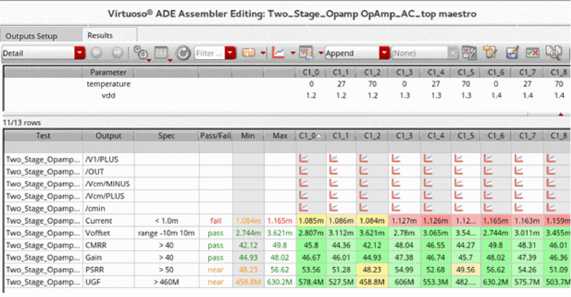
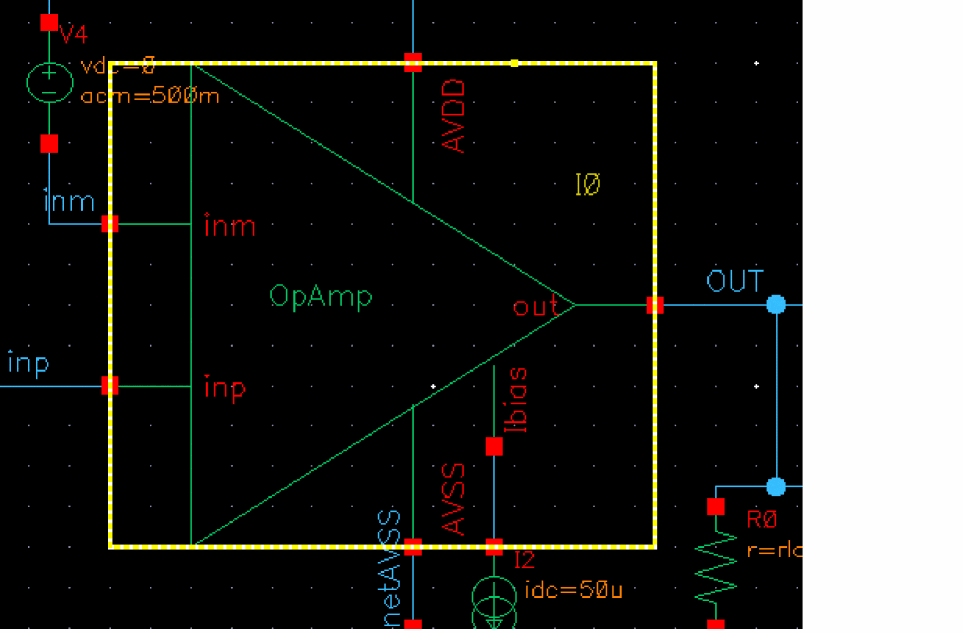
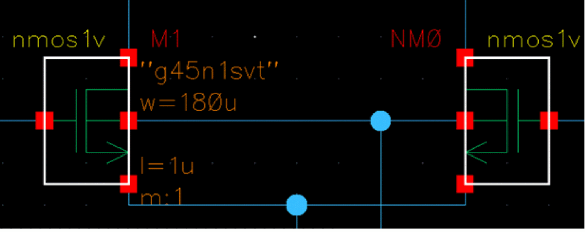
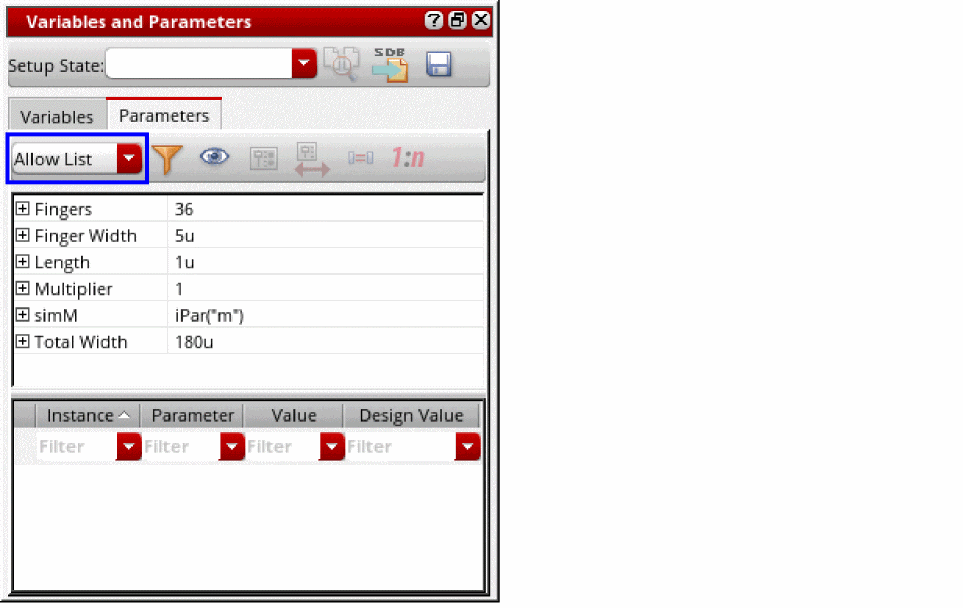
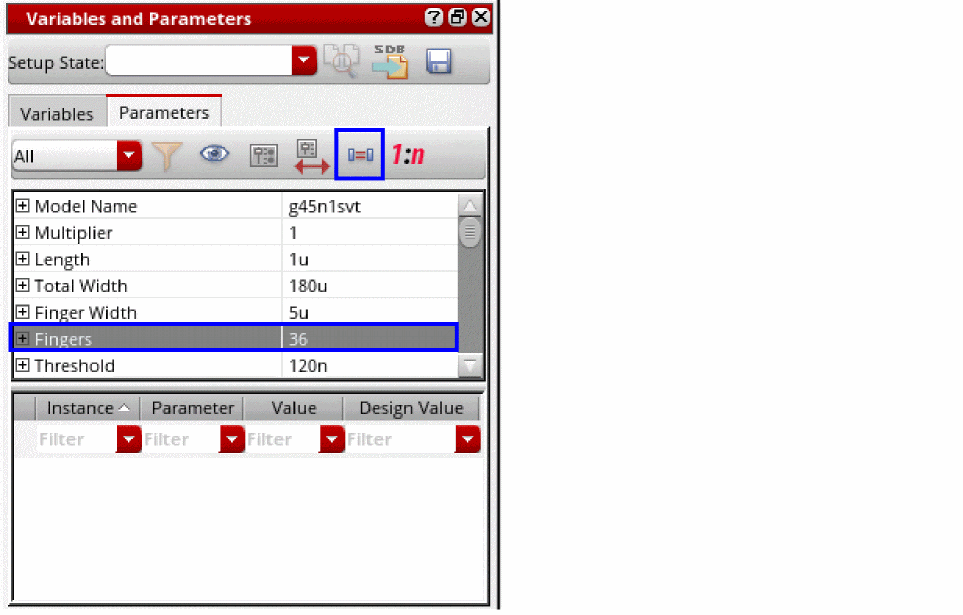
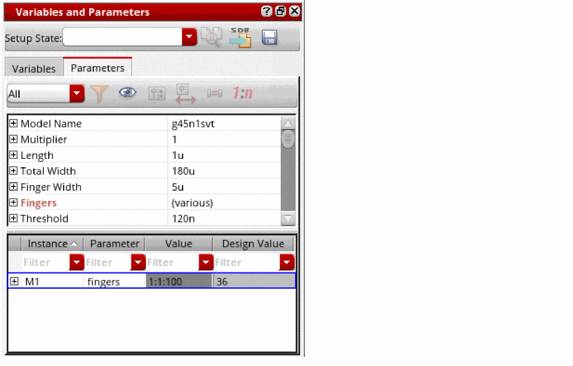
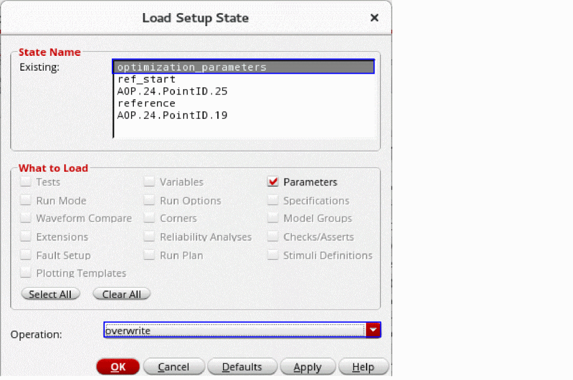
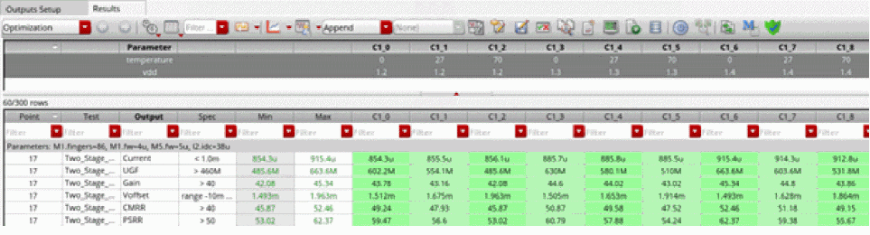

Running Advanced Optimization
- Run a simulation for the design that you want to optimize. Ensure that the specifications have been defined for the outputs in the Outputs Setup tab in ADE Assembler.
-
The simulation results are displayed in the Results tab.
The cells in the results are highlighted in green, yellow, and red colors, which indicate that the measurements meet specification, almost meet specification, and do not meet specification, respectively. -
In the Data View assistant, right-click the name of the test, and choose Open Design in Tab.
The schematic design opens in a new tab. -
Select an OpAmp instance, for example,
I0.
 -
Right-click the selected instance, and choose Descend Read to descend into the schematic of the selected design.
The Descend form opens.
-
Keep the default selection in the form and click OK.
The schematic of the selected instance opens in read-only mode in the current tab. -
Select multiple instances while holding down the
Shiftkey on the keyboard. For example,M1andNM0.
 -
From the menu bar of ADE Assembler, choose Window – Assistants – Variables and Parameters.
The Variables and Parameters assistant opens.
 -
In the Parameters tab of the Variables and Parameters form, select All from the highlighted drop-down list.
 - Click a parameter, for example, Fingers, and then click the Match Parameters icon.
-
In the Value column, define the parametric sweep values for the instance
M. For example,1:1:100.
 -
To load rest of parameters saved in a setup state:
- Click the maestro tab of ADE Assembler.
- In the Data View assistant, expand Setup States.
- Right-click a setup state, and then click Load to load the setup state. For example: optimization_parameter.
The Load Setup State form opens.
 -
Click OK to load the setup state.
All the parameters saved in the setup state are loaded. - From the Run Mode drop-down list in the Run toolbar of ADE Assembler, select Advanced Optimization. The history name is changed to AOP.
-
Click Simulation Options.
The AOP Options form is displayed. - From the Optimizers drop-down list, select a custom optimization algorithm you have created. For example, PSO.
- Specify other options. You can also edit the values of hyperparameters defined for the custom optimization algorithm you selected from the Optimizers drop-down list.
- Click OK to close the AOP Options form.
-
Click Run Simulation.
The optimizer converges on a solution that meets all specification, as shown in the following figure.
The default history name for the Advanced Optimization run is AOP.n, where n is the number of advanced optimization run.
Related Topics
Advantages of Advanced Optimization
Example of Custom Optimization Algorithm
Integrating a Custom Optimizer into ADE Assembler
Return to top